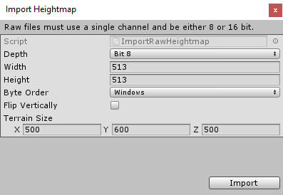
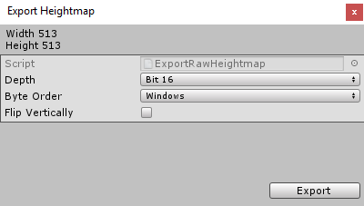

Terrain tools that affect height, such as Raise or Lower Terrain and Set Height, use a grayscale texture called a heightmap. Unity represents the height of each point on the Terrain as a value in a rectangular array. It represents this array using a grayscale heightmap. Heightmaps are built into the Terrain, and the values stored in a heightmap define the height of each point or vertex on the Terrain.
You can import and export heightmaps into the Unity Editor. This is useful when you want to use real world height data to replicate a landmark such as Mount Everest, or work on a heightmap image in an external editor like Photoshop. You can also use 3D modelling applications, such as Houdini and World Machine, to generate Terrain, then import your Terrain into Unity as a heightmap.
It’s good practice to store heightmaps as RAW files. A RAW file uses a 16-bit grayscale format that is compatible with most image and landscape editors. The Unity Editor enables you to import and export RAW heightmap files for a Terrain.
To access the import and export settings into the Editor, select the Terrain component in the Inspector, and click the Terrain Settings button (gear icon in the toolbar).
Under Texture Resolutions (On Terrain Data), there are two buttons labelled Import Raw and Export Raw.
Import Raw allows Unity to read a heightmap from the RAW file format, and generate it in the Editor.

Export Raw allows Unity to write a heightmap from the Editor to the RAW file format.

| 属性 | 描述 |
|---|---|
| Depth | Determines how many bits Unity uses per pixel in the imported or exported heightmap. • Bit 16: Uses 16 bits (2 bytes) • Bit 8: Uses 8 bits (1 byte) |
| Width | The width of the imported heightmap in pixels. |
| Height | The height of the imported heightmap in pixels. |
| Byte Order | Determines how Unity orders the bytes for each pixel in the imported or exported heightmap. This mainly applies to bit–16 depth heightmaps, and is platform-dependent. |
| Flip Vertically | Determines whether Unity flips the exported heightmap vertically across the x-axis. |
| Terrain Size | The size of Terrain that Unity will apply the imported heightmap to. |
2019–04–19 Page amended with editorial review
Added more detailed information and screenshots